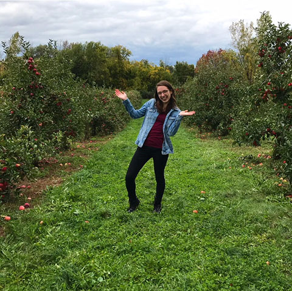

Hello, I'm a second year student studying at Rochester Institute of Technology, where I'm
majoring in New Media Interactive Development. I'm able to code in JavaScript, HTML, CSS, and C#. Along with
this, I am well versed in Adobe Illustrator, Photoshop, and InDesign.
During my time at RIT, I have taken classes such as Digital Survey 1 and 2, as well as Interactive
Design and Algebra Problem Solving 1 and 2, which have taught me in-depth about design and programming. I
have also worked on personal projects, which include an interactive game for a Women in Computing Hackathon
on campus, Alumni Posters designed for Women in Computing club at RIT, as well as an interactive web game
called Boogie Worms.
I love overcoming challenges and finding solutions to problems, which is why I am always looking
for new projects to work on.
Outside of academics, I play tennis through the RIT Tennis Club, which I also help run as vice-president. I'm also a member of a volunteer organization called Momentum, where I learn leadership skills as well as volunteer in the Rochester community. Currently I work as a Teaching Assistant in the IGM departmnet, grading for two introductory JavaScript courses.
